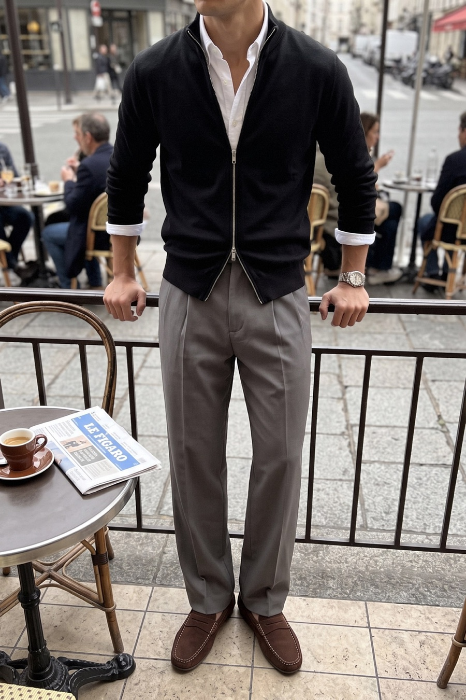
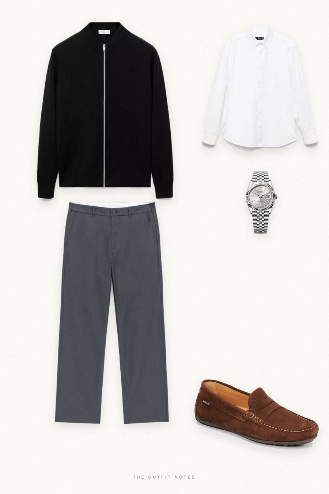
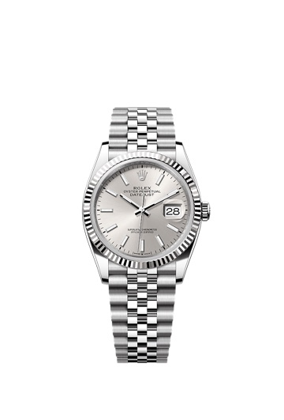

Cafe Noir
black zip, white shirt


A smart casual city outfit for men: black wool-style zip cardigan from Mango over a white Oxford shirt, mid grey relaxed wool-cotton trousers and cocoa suede Pellet loafers. A Rolex Datejust 36 is the single quiet flex. Black, white and grey with one suede texture. Quiet luxury menswear for café mornings and Paris autumn.
The pieces
This page contains affiliate links: if you buy through them, we may earn a commission at no extra cost to you. Disclosure.
 Mango
Mango
Black zip-up knit cardigan
Shop Mango
Mango
White oxford shirt
Shop ARKET
ARKET
Mid-grey relaxed wool-cotton trousers
Shop Pellet
Pellet
Cocoa suede loafers
Shop
Rolex
Silver datejust 36 watch
Shop
Prices are indicative, taken when the look was published, and may have changed. Pictures of the outfit are AI-generated illustrations of real products; the product photos are the retailers' own.
Published 1 October 2026.